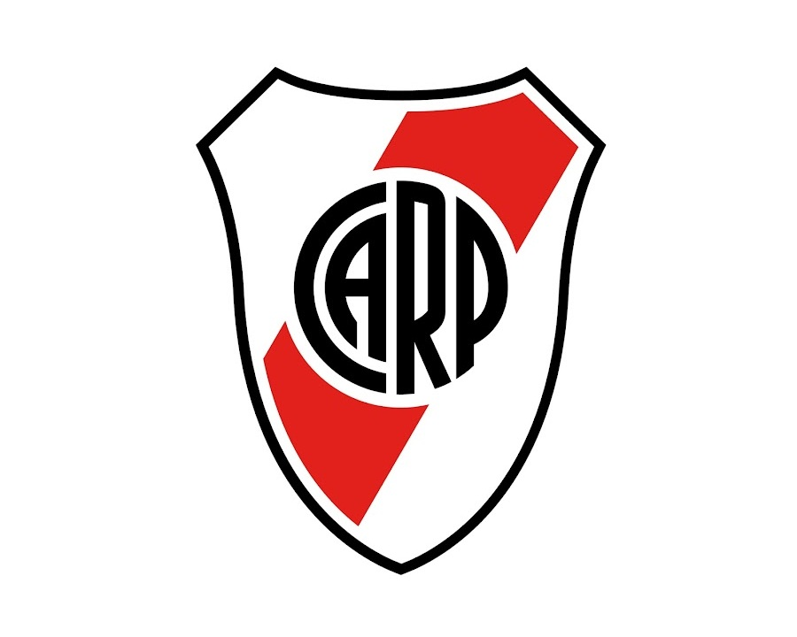

Club Atlético River Plate
Historia
El Club Atlético River Plate es una entidad polideportiva de Argentina. Fue fundado el 25 de mayo de 1901 en el barrio de La Boca, tras la fusión de los clubes Santa Rosa y La Rosales, y su nombre proviene de la antigua denominación que se le daba en el inglés británico al Río de la Plata. Su principal actividad es el fútbol masculino profesional, el cual participa en la Primera División de Argentina. Disputa sus partidos en el estadio Monumental, el de mayor capacidad del país y el segundo en América, con una capacidad para 83 214 espectadores.
River Plate es uno de los clubes más exitosos del mundo con un total de 69 títulos en su palmarés. Es el club más ganador de la Primera División de Argentina, con 37 campeonatos conseguidos —incluyendo el campeonato argentino de 1920 ganado en la era amateur del fútbol argentino—. También es el tercer club más ganador de copas nacionales con 14 títulos. Es el segundo club más ganador de la Copa Argentina con 3 títulos y el más ganador de la Supercopa Argentina con 2 trofeos. Ostenta el récord de ser el club más ganador del fútbol argentino desde su profesionalización en 1931 sumando 66 títulos oficiales.